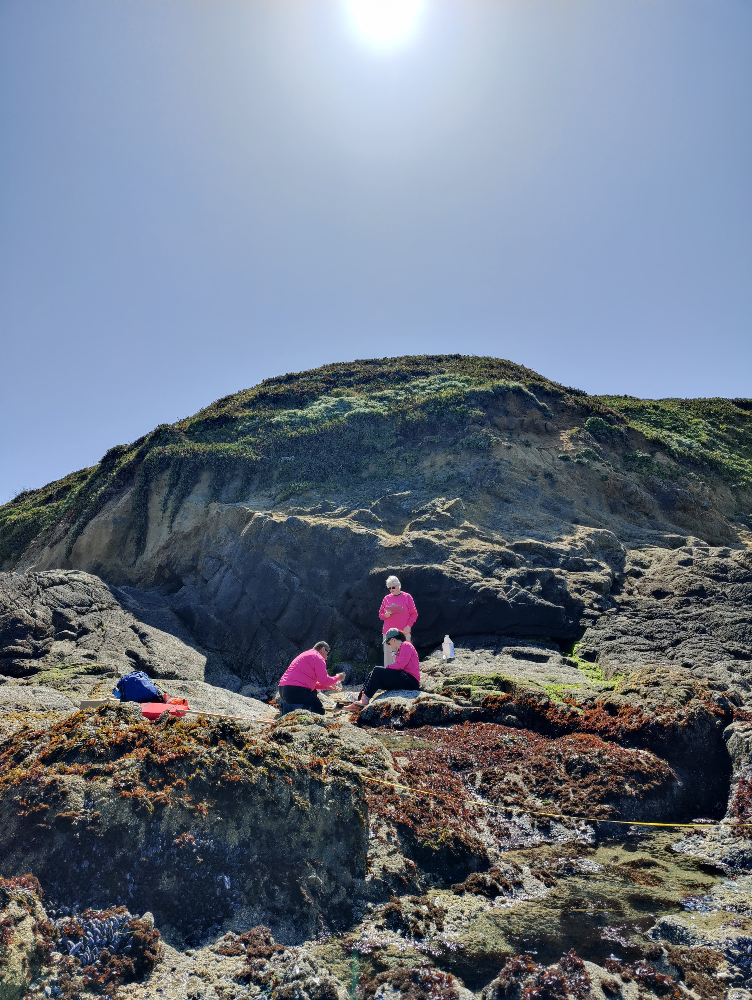

Microplastics Monitoring at the Bodega Marine Reserve
Microplastics (MPs) are pollutants derived primarily from the breakdown of plastic products that are part of our everyday lives. These tiny particles are ubiquitous and can reach even marine protected areas, which are designed to provide refuge from pollution, habitat degradation, and other human impacts. To better understand how this pervasive pollution affects marine ecosystems, we conduct seasonal sampling at the Bodega Marine Reserve using standardized protocols designed to minimize contamination. We monitor microplastics in seawater, algae, grazing snails, and mussels. Our goal is to build a long-term dataset that will help us understand how microplastics accumulate and move through marine ecosystems across different trophic levels. After one year of sampling, we have discovered interesting seasonal, spatial and matrix-dependent trends.